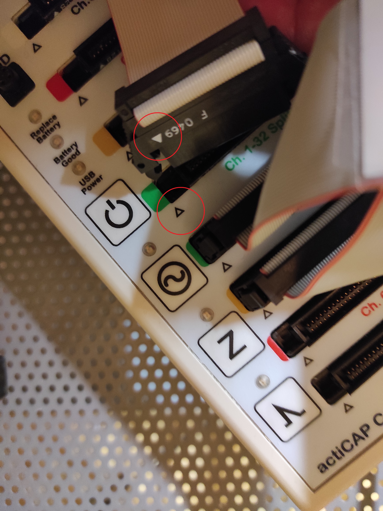

Before starting
The image below shows optical fibers. These transmit the electroencephalographic signal from the amplifiers to the recording computer. You will notice the presence of these cables in the laboratory. It is absolutely crucial not to step on them and being as careful as possible: optical fibers are extremely delicate and very expensive; furthermore, they cannot be repaired (in the event of breakage, it is necessary to replace tens of meters of fiber).
Montage
There are two different possibilities for the montage: you can decide whether to mount the electrodes on the cap before the participant arrives or when the participant already has the cap positioned. In the first case, it is necessary to choose the cap size before measuring the participant’s head circumference: on average, the cap size is 56 cm for women and 58 cm for men, but this is not always true. In the second case, the cap will be chosen specifically for the participant but, of course, the montage will be slightly longer.
Clean with scrub under the left eye and near the outer canthi, keeping in mind that the electrodes will be aligned with the pupils.
Clean with scrub the earlobes.
Put on the cap.
Move the hair with the needle, apply some gel, and then move the hair again if necessary.
Remember that in addition to moving the hair, we are also lightly cleaning the scalp with the needle (which is necessary to reduce impedance). Important: Do not apply too much gel, as if the gel from one electrode comes into contact with the gel from a neighboring electrode, the signals of the two will be interpolated (i.e., the signal from the two electrodes will be the same, and it will be equal to the average of the two).
32-channel montage (Active electrodes, actiCap)
Place the electrodes over the scalp first and then the external ones (eyes and earlobes).
Try to be as symmetric as possible in the placement of the electrodes to the left and right of the outher canti (HEOG left and HEOG right), and make sure to apply all the three ocular electrodes aligned with the pupils.
64-channel montage (Active electrodes, actiCap)
Place the electrodes from 1 to 32 first, which will go into the green cap holders, then those from 33 to 64, which will go into the yellow holders; the numbering is in both cases from 1 to 32. For convenience, position the external electrodes (eyes and earlobes) after those on the scalp.
Try to be as symmetric as possible in the placement of the electrodes to the left and right of the outher canti (HEOG left and HEOG right), and make sure to apply all the three ocular electrodes aligned with the pupils.
Managing the hardware
- Disconnect the battery by unplugging the blue and gray plug on the top (it can supply power to the amplifiers only if it is not charging)

- Turn on the amplifiers with the switches placed behind them.

- Connect the electrodes to the Control Box. If you are doing a 32-channel setup, plug them into the green slot labeled ‘Ch. 1-32 Splitter Box.’ If you are doing a 64-channel setup, also connect the other 32 electrodes (those placed in the yellow placeholders on the cap) to the yellow slot (Ch. 33-64 Splitter Box).

- The correct way to connect them is to align the triangle on the plug with the one on the socket (see image below). Gently push the plug to insert it.

- Now, connect the Ref (Reference) and Gnd (Ground) electrodes to their respective slots. There is a small notch on both plugs that will help you insert them in the correct way.

- The standby button on the control box should already be turned on. If not, turn it on by pressing it for a few seconds.
Important Note: It is crucial to plug all the connectors in the right way to prevent any breakage.